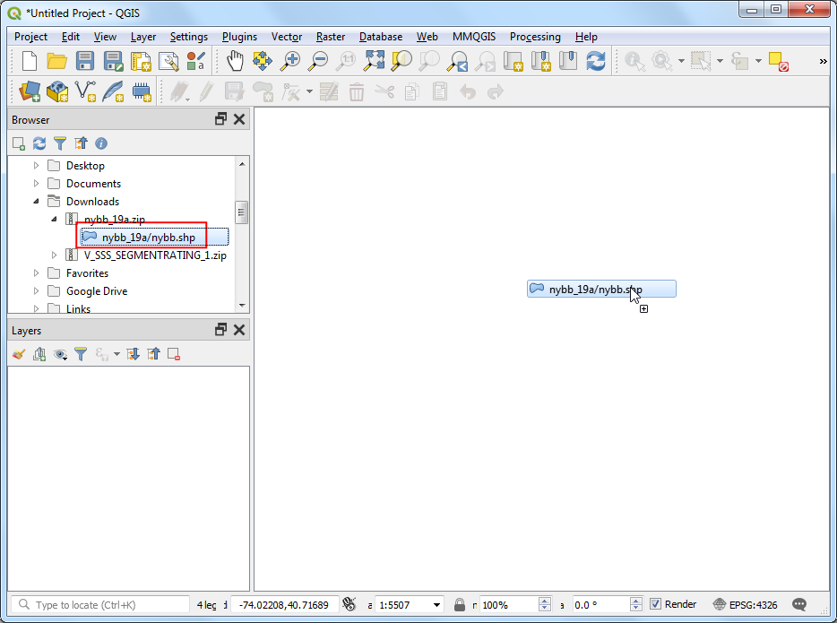

Service Area Analysis using Openrouteservice (QGIS3)¶
Service area analysis is useful in evaluating accessibility of locations. Given locations of fire stations, hospitals, public transit stations etc. you can use such analysis to identify what areas can be served from these locations by either amount of distance traveled or by time taken. Till recently, such analysis was difficult using open-source tools and data. But now we have access to a global street network using OpenStreetMap (OSM) and free web-services such as Openrouteservice (ORS) that can perform complex routing tasks using OpenStreetMap (OSM) data. In this tutorial, we will use the ORS Tools Plugin to perform service area analysis in QGIS.
Overview of the task¶
We will use metro rail station data for Kochi, India to determine areas that are within 15-minutes of walking distance.
Other skills you will learn¶
How to load General Transit Feed Specification (GTFS) transit feed data in QGIS.
How to convert sequential point data to line tracks using the Points to Path tool.
Get the data¶
Kochi Metro Rail Limited (KMRL) provides open data for the Kochi Metro Rail Project in Global Transit Feed Specification (GTFS-static) format. Request for data download by visiting the Open Data page.
For convenience, you may directly download a copy of the datasets from the links below:
Data Source [KMRL]
Setup¶
Openrouteservice API provides routing algorithms that work on free geographic data from OpenStreetMap. It is a free web-based service that can be accessed via a QGIS plugin. While the service is free, it requires you to sign-up and get an API key. The API key is used to prevent abuse and enforce limits on usage.
Visit Openrouteservice Sign Up page and create an account. Once your account is activated, visit your Dashboard and request a token. Select
Freeas the Token type and enterORS Tools QGISas the Token name. Click CREATE TOKEN.

Once created, copy the long string displayed under
Key. This is a unique identifier linked with your account that will be used to authorize use of this service.

Open QGIS. Visit . Search for ORS Tools plugin and install it. Click Close.

In the main QGIS Window, go to .

Expand the openrouteservice section and paste the
key(copied in step 2) in the API Key text-box. Click OK.

Procedure¶
Unzip the downloaded
KMRL-Open-Data.zipfile to a folder on your computer. You will notice that the unzipped directory contains many text files. Each file contains data for a different aspect of the transit system. The format of the files and their uses are described in GTFS Reference. Out of all the files, 2 files contains geospatial data and is of interest to us. The fileshapes.txtcontains points that describe a physical path that the vehicle takes, and the filestops.txtcontains the location of each transit stop. Both of these are CSV files that can be imported into QGIS. Click the Open Data Source Manager button.

In the Data Source Manager dialog, switch to the Delimited Text tab. Click the … button next to File name and browse to the
shapes.txtfile. SelectCSV (comma separated values)as the File Format. The X field and Y field should be auto populated. Click Add.

Similarly, click the … button again and select
stops.txtfile. Click Add. Click Close.

You will see 2 new layers
stopsandshapesadded to the Layers panel. Let’s convert theshapespoint layer into a line layer representing the path of the metro line. Go to .

Search and locate the tool. Double-click to launch it.

In the Points to Path dialog, select
shapesas the Input point layer. As per GTFS specifications, each individual route has a uniqueshape_idso select that from the drop-down menu as the Path group expression. We can also specify the order of points that will form the line by selectingshape_pt_sequenceas the Order expression. Click Run.

A new layer
Pathswill be added to the Layers panel. You can turn off the visibility of theshapeslayer to see the newly added line layer.

Now that we have the metro stations and line data added, we are ready to start the network analysis. In the Processing Toolbox, search for and locate the tool. Double-click to launch it.

Select
openrouteserviceas the Provider. We will be computing a 15-min walking distance polygon from each metro station. Selectstopsas Input Point Layer. Selectstop_idas the Input Layer ID Field. From the Travel mode drop-down, selectfoot-walking. As we are interested in time-based area, selecttimeas the Dimension. Finally enter15minutes as the ranges. Click Run.

Opomba
Note that the Openrouteservice API has a limit of 20 requests per minute for Isochrones. So if your layer has more than 20 points, you may see errors indicating that the rate limit exceeded. You can keep the tool running and it will continue processing 20 points / min.
Once the tool finishes, you will see a new layer
Isochronesloaded in the Layers panel. Each point has an associated polygon representing the area that is accessible within 15 minutes by walk. To see this in the context the data that was used to generate them, we can add the OpenStreetMap basemap. Scroll down the Browser panel and locate . Drag it to the canvas.

A new layer
OpenStreetMapwill be added to the Layers panel. Drag it down to change the layer order and keep it at the bottom of the layer stack. Zoom and pan to see if the results match the road network. You will see that the polygons are not circular, because the travel time is computed along roads, so the regions that have no roads will have lesser area covered.

To compute the service area, we need to complete one last task. We can merge individual isochrone polygons to form a single polygon representing the areas that are accessible. Search for and locate .

Select
Isochronesas the Input layer and click Run.

Once the processing finishes, a new layer
Dissolvedwill be added to the Layers panel. This polygons represents the full region that is accessible from the metro system within 15-minutes of walk.

Opomba
This is a simple example of how a service area analysis for a public transportation project can be done in QGIS. A more comprehensive service-area analysis for the metro system would include other modes of transport. We could include feeder buses, nearby bus stops and routes serving those bus stops to expand the analysis. We may also include travel by other modes such as car and taxi.